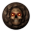
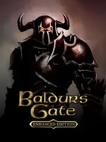

Baldur's Gate Enhanced Edition |
|
| Tiempo de juego | 34s |
| Última actividad | 16/1/2026 11:38:13 |
| Añadido | 17/11/2025 17:43:14 |
| Modificado | 17/11/2025 17:44:37 |
| Estado de finalización | Jugado |
| Librería | Playnite |
| Fuente | |
| Plataforma | PC (Windows) |
| Fecha de lanzamiento | 27/11/2012 |
| Puntuación de la Comunidad | 83 |
| Puntuación de la Crítica | 78 |
| Puntuación de usuario | |
| Género | Adventure Role-playing (RPG) Strategy |
| Desarrollador | Overhaul Games |
| Editor | Atari, Inc. Beamdog |
| Característica | Co-Operative Multiplayer Single Player |
| Enlaces | Steam GOG |
| Tag | |
Antes de los dragones en 3D y los romances con aliens, hubo un juego que lo empezó todo. Baldur's Gate es el papá, el abuelo y el tatarabuelo de casi todos los RPGs que jugaste y amaste. Es la Biblia del rol de PC, una adaptación de Dungeons & Dragons tan pura y salvaje que te podés pasar 100 horas y no ver ni la mitad.
Acá no hay flechitas que te dicen a dónde ir ni misiones que se resuelven solas. Esto es rol del áspero. Creás tu personaje desde cero, con tiradas de dados como en la vida real, y te largan en un mundo GIGANTE y súper hostil. La clave es la pausa táctica: el combate es en tiempo real, pero si no pausás cada dos segundos para dar órdenes a tu equipo, te hacen puré en un parpadeo. Hay que usar el bocho.
La "Enhanced Edition" es la forma perfecta de vivir esta locura hoy. Pule los gráficos, adapta la interfaz a las pantallas modernas y mete contenido nuevo, pero sin tocar la esencia. Es la experiencia original, sin el quilombo de tener que instalar 200 parches para que ande en un WindoS nuevo.
Si te considerás fan del RPG y no jugaste a esto, te falta la materia más importante. Es un viaje de ida.